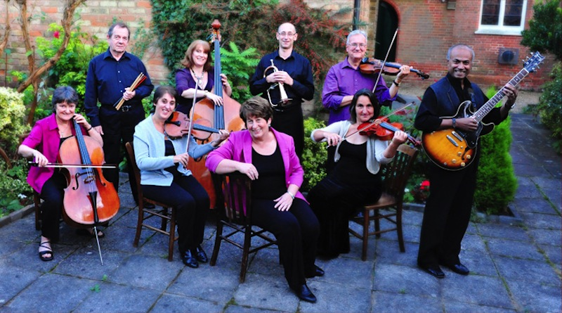

ABOUT F2F
Our story began 18 years ago, when a few of the current group members were invited to perform live, as a musical ensemble inside one of the large superstores in Watford, Hertfordshire. The group took on the name "St Andrew's Consort" and the reaction from the crouds was overwhelming. The vision had already begun and the musical ministry was on its way.
The change of name to Face2Face came about as the group grew and began to share their personal stories and testimonies of how a loving God had intervened in their lives and could do the same for the listener. This naturally led to the concept of a "face to face encounter with God". Audiences were moved and challenged to take a step of faith; to talk through, and receive prayer for any personal issues that may have been stirred by the music and testimonies of the group.
Face2Face now comprises nine group members who are mostly professional musicians and vocalists. We also have our own PA system and support team.
In a nutshell, the vision and mission of the Face2Face ministry is primarily to reach an invited audience with the love and saving grace of God through music and testimony. The spiritual impact of the ministry has been witnessed time and time again when the message of God's love has been presented with faith and conviction to a live audience.
F2F is a gospel centred musical ministry, and doesn't normally perform for weddings, parties or other social function unless we have the freedom to share our faith and testimony in music and words at such events but individual members are available to play as a smaller group at weddings/parties.
We hope you enjoy some of the music clips on this site and if you think we can support your evangelistic outreach, do give us a call and we'll be happy to chat through the entire process. You can also take a quick look at how a Face2Face concert is staged in the 'How to book & organise a concert' section.